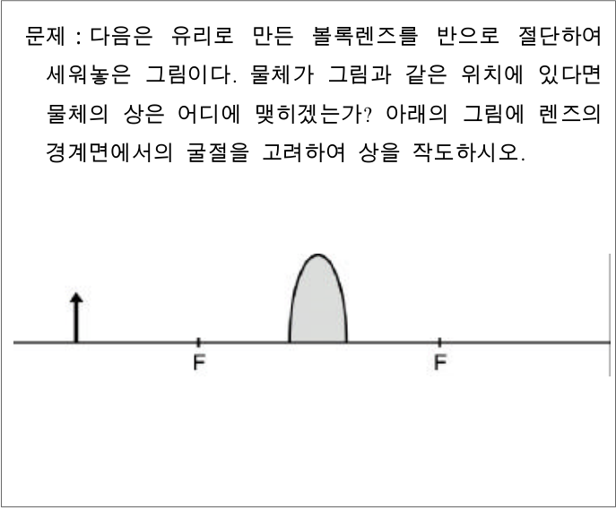

반으로 자른 볼록 렌즈의 상 작도 — 직접 풀고 채점 준거 세우기Image by a half convex lens · ray construction with refraction at both surfaces, scoring criteria
다음은 교사가 학생들에게 제시한 문제이다. 이 문제를 직접 풀어서 그 답을 그림에 표시하고, 이 문제에 대한 학생들의 답안을 채점할 때 고려해야 할 채점 준거를 2가지만 쓰시오. (3점)

문제 : 다음은 유리로 만든 볼록렌즈를 반으로 절단하여 세워놓은 그림이다. 물체가 그림과 같은 위치에 있다면 물체의 상은 어디에 맺히겠는가? 아래의 그림에 렌즈의 경계면에서의 굴절을 고려하여 상을 작도하시오.
문제를 직접 풀어 상의 위치를 그림에 표시하시오 (렌즈 경계면에서의 굴절 고려).
이 문제에 대한 학생들의 답안을 채점할 때 고려해야 할 채점 준거를 2가지만 쓰시오.
정답모범 답안 요약
| 문항 | 모범 답안 (요약) | 검증 |
|---|---|---|
| 작도 | 렌즈 오른쪽 2F′(렌즈에서 \(2f\)) 위치에 물체와 같은 크기의 거꾸로 선 실상이 완전하게 생긴다(반쪽 렌즈이므로 밝기만 약해짐). 광선은 렌즈의 앞·뒤 두 경계면에서 각각 굴절하도록 그린다. | 모의실험: 스넬 법칙으로 두 경계면을 추적한 광선이 2F′ 근처(두꺼운 렌즈 보정 포함)에서 배율 ≈ −1로 모임 |
| 채점 준거 | ① 광선이 렌즈의 두 경계면(공기→유리, 유리→공기)에서 각각 스넬 법칙에 맞는 방향으로 굴절하도록 작도했는가 ② 상의 위치(2F′)와 크기(같음)·방향(거꾸로 선 실상)을 옳게, 그리고 반쪽 렌즈라도 상 전체가 맺히도록 나타냈는가 | 문항의 요구 조건과 대표 오개념에서 도출 |
1소문항별 풀이 (AI 모범 답안)
작도 1점
문제를 직접 풀어 상의 위치를 그림에 표시하시오 (렌즈 경계면에서의 굴절 고려).
1상의 위치
그림에서 물체–렌즈 거리 = 초점 거리의 2배(\(a=2f\)). \(\dfrac1{2f}+\dfrac1b=\dfrac1f\) → \(b=2f\): 렌즈 오른쪽 2F′ 위치(두 번째 F 표시의 두 배 거리).
2상의 크기·방향·종류
배율 \(m=-b/a=-1\) → 물체와 같은 크기의 거꾸로 선 실상. 광축 아래쪽에 생긴다.
3반쪽 렌즈의 의미
물체의 각 점에서 나온 빛은 사방으로 퍼지며 렌즈 위쪽 절반에도 닿는다. 렌즈의 어느 부분을 지나든 같은 상점으로 모이므로 상은 완전한 모양으로 생기고, 렌즈를 지나는 빛의 양이 줄어 어두워질 뿐이다.
4작도 (두 경계면 굴절)
① 물체 끝에서 광축에 나란한 광선: 렌즈 앞면(공기→유리)에서 법선 쪽으로 꺾이고, 뒷면(유리→공기)에서 법선에서 멀어지게 꺾여 F′를 지나 2F′ 아래쪽 상점에 도달. ② 물체 끝에서 렌즈 중심(밑변의 중앙)을 향하는 광선: 거의 꺾이지 않고 직진(두 면이 그 점에서 평행에 가까움)하여 ①과 만남 → 상점. 물체 아래 끝(광축 위)의 상은 광축 위 2F′.
① ‘렌즈가 반쪽이므로 상도 반쪽(위 또는 아래 절반)만 생긴다’ ② 렌즈 중앙선에서 한 번만 꺾어 그림(문제는 경계면 굴절을 요구) ③ 초점을 지나는 광선을 그대로 써서 렌즈가 없는 아래쪽을 통과시킴.
채점 준거 2점
이 문제에 대한 학생들의 답안을 채점할 때 고려해야 할 채점 준거를 2가지만 쓰시오.
1준거 1 — 경계면 굴절
광선이 공기→유리 경계면에서는 법선 쪽으로, 유리→공기 경계면에서는 법선에서 멀어지는 쪽으로 꺾이도록 두 번 굴절시켜 그렸는가 (렌즈 중앙선에서 한 번 꺾은 작도는 문제의 요구를 충족하지 못함).
2준거 2 — 상의 위치·성질
상을 2F′(렌즈에서 \(2f\))에 물체와 같은 크기의 거꾸로 선 실상으로, 완전한 모양으로 그렸는가 (상의 일부만 그리거나 위치·방향이 틀리면 감점). 반쪽 렌즈는 밝기만 줄어든다는 설명이 있으면 더 좋다.
3그 밖의 가능한 준거
- 물체의 한 점에서 나온 두 개 이상의 광선이 상의 한 점에서 만나도록 작도했는가
- 렌즈가 없는 아래쪽을 지나는 광선을 쓰지 않았는가(사용 가능한 광선 선택)
준거를 ‘깔끔하게 그렸는가’, ‘자를 사용했는가’처럼 물리 내용과 무관하게 쓰는 경우. 채점 준거는 문항의 측정 목표(경계면 굴절, 반쪽 렌즈 오개념)와 연결되어야 한다.
2채점 기준 (예시)
공식 채점 기준은 공개되지 않는다. 배점과 답안 요소를 바탕으로 만든 예시 채점 기준이다.
| 문항 | 배점 | 채점 요소 (예시 답안의 핵심 표현) |
|---|---|---|
| 작도 | 1 | 2F′에 물체와 같은 크기의 거꾸로 선 실상(전체)을 작도 |
| 채점 준거 | 1 | 준거 1: 두 경계면에서의 굴절 방향(법선 쪽/법선에서 멀어짐)을 옳게 작도했는지 |
| 채점 준거 | 1 | 준거 2: 상의 위치·크기·방향 및 ‘상 전체가 생김(밝기만 감소)’을 옳게 나타냈는지 |
| 합계 3점 | ||
3출제 의도·검토
출제 의도
- 교사 스스로 문제를 정확히 풀 수 있는가(내용 지식) + 그 문제의 측정 목표에 맞는 채점 준거를 세울 수 있는가(평가 지식).
- ‘렌즈 반쪽 → 상 반쪽’, ‘렌즈 중앙에서 한 번 꺾임’이라는 대표 오개념을 채점 준거에 반영하는가.
검토 의견
43D 모의실험 — 반으로 자른 볼록 렌즈의 광선 추적 (두 경계면 스넬 법칙) (F 전체화면)
5고등학생 지도 — 고교 교육과정과 잇기
고교 교육과정과의 연결
- 중학교 과학 ‘렌즈에 의한 상’, 고교 물리 빛의 굴절(스넬 법칙)
- 카메라 렌즈의 일부를 가려도 사진이 잘리지 않고 어두워지는 현상과 연결
고등학생용 변형 문항
- 볼록 렌즈의 아래 절반을 검은 종이로 가리면 스크린의 상은 어떻게 되는가? (전체가 생기고 어두워짐)
- 물체가 2F에 있을 때 상의 위치와 크기는? (2F′, 같은 크기, 거꾸로)
- 빛이 공기에서 유리로 들어갈 때 법선 쪽으로 꺾이는 까닭은? (유리에서 속력이 느림)
6수업 활용 안내
수업 흐름 (40분)
- 예상하기 (5분) — ‘렌즈를 반으로 자르면 상은?’ 개인 예상(반쪽 상 오개념 진단)
- 직접 풀기 (10분) — 두 경계면 굴절 작도, 2F′ 상
- 모의실험 (10분) — 반쪽/온 렌즈, 얇은 렌즈 근사 비교
- 채점 준거 만들기 (15분) — 학생 답안 예시 4개를 준거로 채점해 보기
자주 나오는 오개념
- “렌즈를 반으로 자르면 상도 반만 생긴다” → 상 전체, 밝기만 감소
- “빛은 렌즈 중앙선에서 한 번 꺾인다” → 두 경계면에서 굴절(중앙선 꺾기는 얇은 렌즈 약속)
- “초점을 지나는 광선은 항상 그릴 수 있다” → 렌즈가 없는 부분을 지나면 사용 불가
평가 포인트
- 상의 위치·크기·방향·종류를 정확히 표시하는가
- 경계면 굴절 방향을 스넬 법칙에 맞게 그리는가
- 채점 준거가 측정 목표·오개념과 연결되는가
실험 연결
볼록 렌즈와 스크린으로 상을 맺게 한 뒤 렌즈의 위·아래 절반을 차례로 가려 상이 잘리지 않고 어두워지는 것을 확인한다.